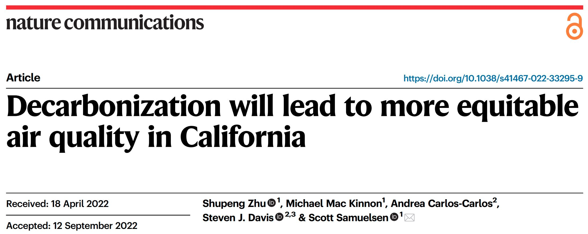
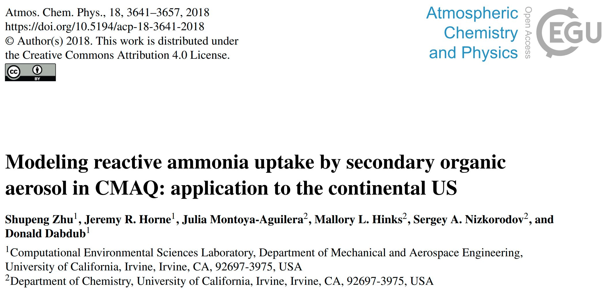
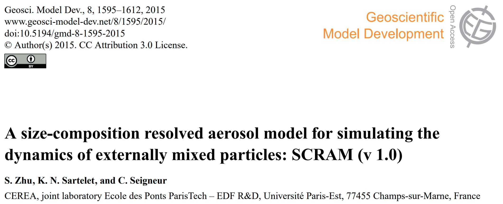

Research Highlights
1. Air Quality and Environmental Justice Co-benefit of Climate Actions
This highly cooperative research intended to optimize air quality and environmental justice co-benefit of climate actions. We developed new statistical tools and modeling to better understand and evaluate the health and socioeconomic consequences of different technology and emission mitigation pathways in achieving decarbonization goals. This includes the simulation of the spatiotemporal response of related atmospheric pollution processes, and the prediction of corresponding environmental effect benefits by coupling geographic big data such as economic income, population structure, baseline mortality rates, and multiple pollutant health effect functions. Moreover, we designed an environment justice index to quantify the overall air quality benefits distribution towards disadvantaged communities (DACs) between decarbonization scenarios.

2. NH3-SOA Uptake Modeling
The inorganic and organic aerosol formation is treated completely separate in most of the air quality models. Which means reactions between inorganic and organic species are considered insignificant and not taken into account. However, recent observations have shown that NH3, which is one of the most important inorganic gas precursors, can react with carbonyl compounds in SOA, forming nitrogen-containing organic compounds and impact aerosol optical properties. Such a process is considered as NH3 uptake by SOA. In order to better understand this process, and investigate its potential impact on air quality simulations, we modeled the NH3 uptake based on lab measurement and integrated the model in regional air quality model.

3. Aerosol Mixing State Modeling
Aerosols are small particles in the air that sometimes contain toxic chemicals that place human and environmental health in danger, especially those aerosols emitted from human constructions such as power plants and automobiles. In order to effectively eliminate dangerous aerosols from the air, it is necessary that their formation and distribution are properly understood. Further, properties of aerosols are heavily influenced by their mixing state, thus requiring a model to properly demonstrate this process. We developed a numerically optimized model that efficiently calculates aerosol mixing across a large region. In his model, the mixing state of particles is resolved based on both their size and chemical composition, which demonstrates a marked improvement over traditional models and allows for more accurate simulation of aerosol formation.
